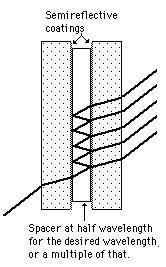

|

|
If a thin transparent spacer is placed between two semireflective coatings, multiple reflections and interference can be used to select a narrow frequency band, producing an interference filter. If the spacer is a half wavelength for the desired wavelength, then other wavelengths will be attenuated by destructive interference. Commercial filters are available with a half-power width of about an angstrom. If the back layer is totally reflective, then the arrangement is called a dichroic mirror, reflecting only the selected wavelength. These devices are designed for normal incidence, and shift in wavelength to shorter wavelengths if
tilted.
|